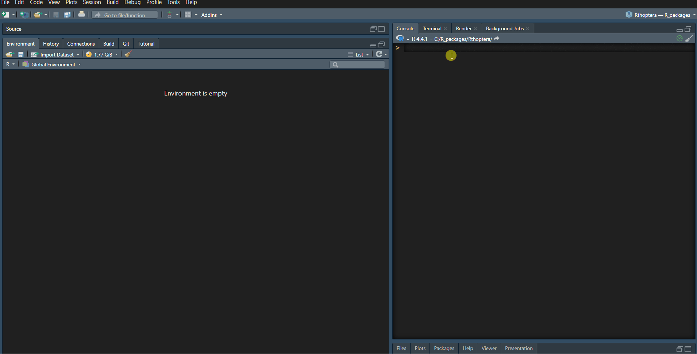

NOTE: If no Wave objects are found in the R environment (i.e., you haven’t imported any yet), only the import_wave app will work.
How to launch an app
In Rthoptera, most of the relevant functions come with a Shiny app companion. To explore which apps are available, run:
The launch_app() function supports partial matching,
which means that, for example, if you want to run the
import_wave app, you can just type:
launch_app("import")and Rthoptera will launch the import_wave app.
However, some apps have longer and similar names, for which you will
need to type more characters. For example, if you run:
launch_app("temporal_stats")Rthoptera will ask you to specify further. If you pay
attention to the list of available apps, you will notice that the
‘temporal_stats’ apps are the only ones ending with ‘hq’ and ‘lq’, so if
you run:
launch_app('hq')Rthoptera will understand you are trying to do launch_app(“temporal_stats_hq”).
How to use the launch_app() command: 